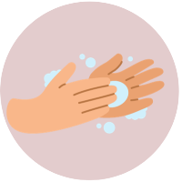
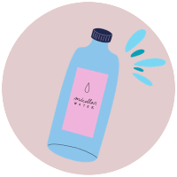
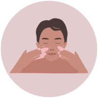
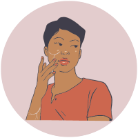
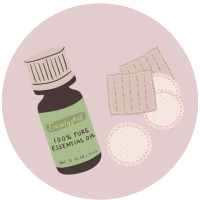

Começar os seus cuidados de beleza com a higienização da pele é super importante para eliminar as impurezas.
Realizar uma maquiagem sem a limpeza da pele pode prejudicar tanto quanto a maquiagem e também a sua pele.
Lave as mãos: Sempre comece lavando bem as mãos para garantir que você está tocando seu rosto com as mãos limpas.

Lenços umedecidos: Use um lenço umedecido de boa qualidade. Os lenços umedecidos são práticos para remover maquiagem e sujeira, mas escolha aqueles que são suaves e adequados ao seu tipo de pele.
Remova a maquiagem: Passe o lenço umedecido suavemente sobre o rosto para remover a maquiagem. Certifique-se de não esfregar muito, especialmente na área dos olhos, para evitar irritações.
Água micelar: Em seguida, aplique a água micelar em um algodão ou almofada de algodão. Passe suavemente sobre o rosto para remover qualquer resíduo de maquiagem, sujeira ou óleo que possa ter ficado para trás. A água micelar ajuda a limpar e tonificar a pele.

Enxágue (opcional): Dependendo das instruções do produto, você pode enxaguar o rosto com água morna para remover qualquer resíduo restante, mas muitas águas micelares não exigem enxágue.

Hidratação: Após a limpeza, é importante aplicar um hidratante adequado ao seu tipo de pele para manter a pele saudável e equilibrada.
A pele é um órgão incrível e complexo que varia de pessoa para pessoa. Existem diferentes tipos de pele, e entender o seu tipo específico é essencial para cuidar dela. Aqui estão os tipos mais comuns:
Pele Seca: Esta pele é frequentemente áspera, com descamação e sensação de repuxamento. Pode ser causada por fatores genéticos, clima seco, ou até mesmo produtos de cuidado inadequados.

Pele Normal: Considerada a pele "ideal", é equilibrada, com poros pequenos, textura suave e poucas imperfeições. Geralmente não é excessivamente oleosa nem seca, mantendo uma hidratação natural.
Pele Oleosa: Caracterizada por poros dilatados, brilho excessivo e propensão a acne, a pele oleosa produz mais óleo do que o necessário. Pode ser causada por fatores genéticos, desequilíbrio hormonal ou uso de produtos inadequados.

Pele Mista: Esta é uma combinação de pele oleosa em certas áreas (geralmente na zona T) e pele normal ou seca em outras partes do rosto. Requer cuidados diferenciados para atender às necessidades de cada área.
Pele Sensível: É reativa a produtos, condições climáticas extremas, e até mesmo ao estresse. Pode apresentar vermelhidão, coceira, queimação ou descamação. Cuidados suaves e produtos hipoalergênicos são essenciais.